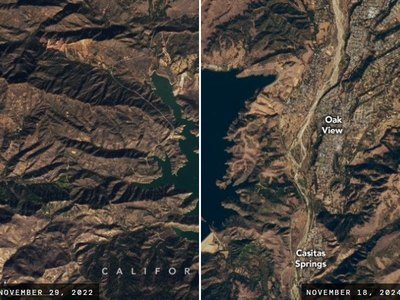
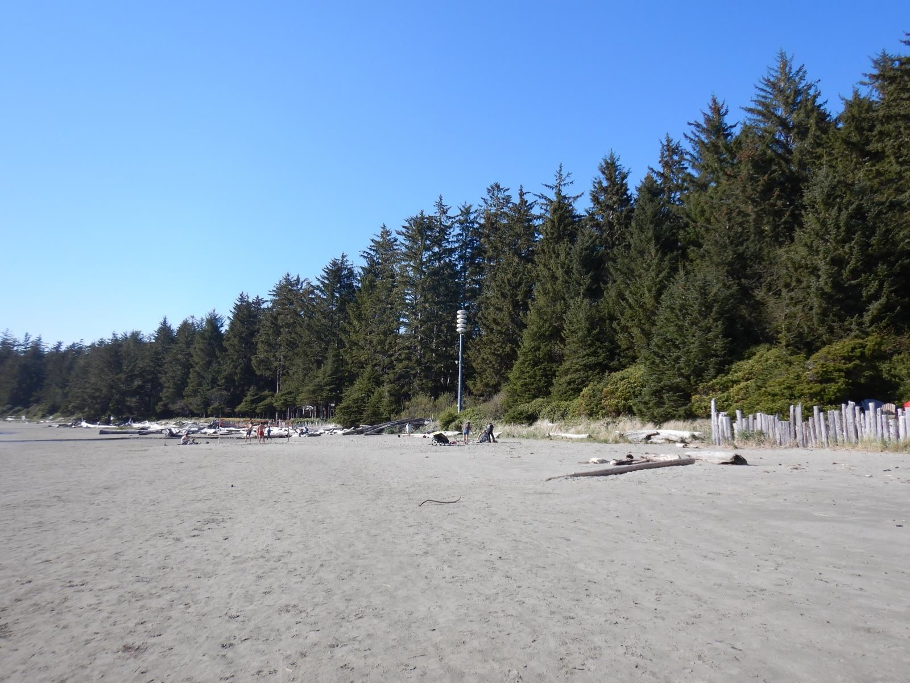
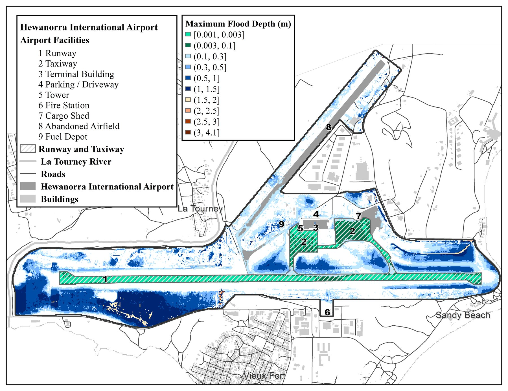
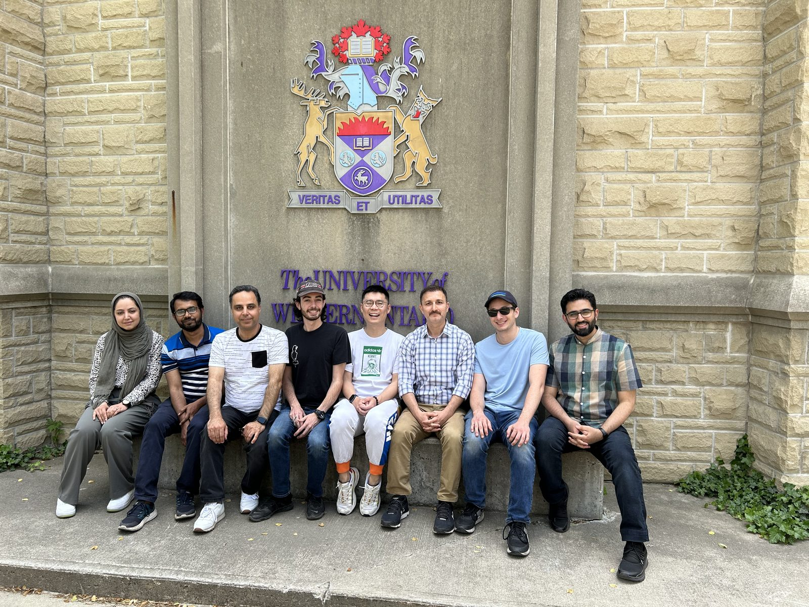

Compound flood processes
Rain, rivers, surge and waves acting together on Canada's coasts and in the Great Lakes
Read moreHydroclimate Extremes and Climate Change Lab, Western University
Heavy rain, high rivers, storm surge, waves and wind often come with the same storm. We study how these hazards interact, how climate change alters those interactions, and what that means for infrastructure design and flood risk in Canada.
Research
We connect storm and climate processes to flood estimates, inundation modelling and infrastructure design, using process models, extreme value statistics and machine learning, with uncertainty tracked at each step.
Rain, rivers, surge and waves acting together on Canada's coasts and in the Great Lakes
Read more
Drought to deluge whiplash, design rainfall and the human signal in observed change
Read more
Hydrodynamic models, emulators, satellite flood mapping and exposure from imagery
Read moreWhy combinations matter
If heavy rain and storm surge were independent, a year in which both exceed their 100-year levels would come about once in 10,000 years. Because the same storms often drive both, such years are far more likely. Move the slider to see how the joint odds change as dependence grows.
Teaching example only: a synthetic Gaussian copula of annual maxima with standardized drivers, not an estimate for any real place, and not a statement about peaks within a single storm. Each point is one simulated year, so the sample count varies around its expected value. Real dependence varies by coast, season and storm type, which is what we measure.
Calculating
Projects

Tofino, BCCoastal communities in Canada, Cuba and Indonesia facing long-term climate and geological hazards
Project details Pacific coast
Pacific coastRebuilding a November 2021 storm in a two-dimensional flood model, with sea-level rise and a fast emulator next
Case study Caledon, Ontario
Caledon, OntarioUpdated design rainfall for a fast-growing town north of Toronto
Project detailsPartners and funders include Environment and Climate Change Canada, the National Research Council Canada, NSERC, Mitacs, the New Frontiers in Research Fund, the Institute for Catastrophic Loss Reduction, Toronto Water and the Town of Caledon.

Featured case study
Two theses followed Tropical Storm Matthew's water from the sky to the runway, and then modelled how disruption spreads through the airport, the roads and tourism. Ying (Katrina) Zhang rebuilt the flood probabilistically; Soheil Bakhtiari traced how failures spread and recover hour by hour with dynamic Bayesian networks.
Newsletter
A monthly letter from Reza Najafi on water extremes, infrastructure and communities in Canada, North America and beyond. Each issue pairs new research with an original look at public data, with graphs.
News
DefenceYasaman Taleghani defends her MESc thesis on compound storm surge and wave extremes across North American coasts, co-supervised with Mercè Casas-Prat (ECCC)
AwardMehrdad Jafarzadeh wins first place and Yasaman Masaeli second place in the student presentation competition at the 2026 CSSL–CMRR–WindEEE Multi-hazard Risk and Resilience Workshop
WorkshopThe Centre for Multihazard Risk and Resilience, CSSL and WindEEE host their annual multi-hazard workshop at Western on October 14 and 15, with 184 registrations. Reza Najafi co-organizes it with Katsuichiro Goda and Nova Roosmawati, convenes and presents in the Climate and Flood Hazards session, and made the opening video
NewsletterLaunch of The Return Period, a monthly newsletter on water extremes and infrastructure
TeamTianze Pang joins as a postdoctoral associate to lead physical coastal process research
The lab

Our graduates and postdoctoral fellows now work in universities, federal science and engineering practice.
Meet the teamWe recruit PhD and MESc students and postdoctoral researchers interested in physical processes, statistics and computation.